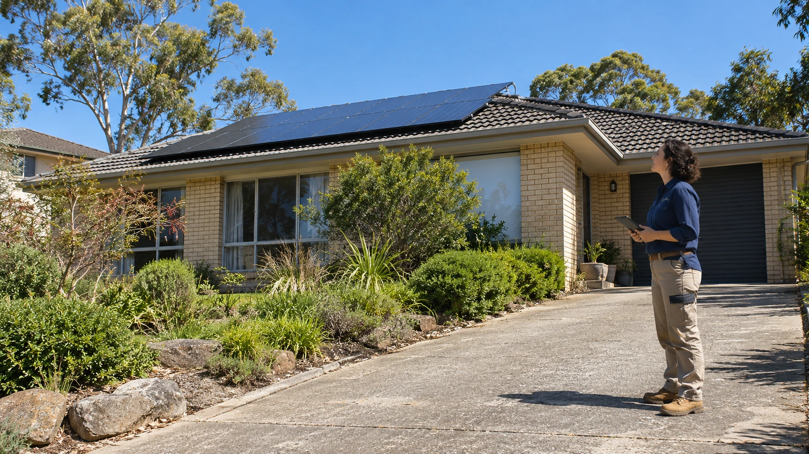
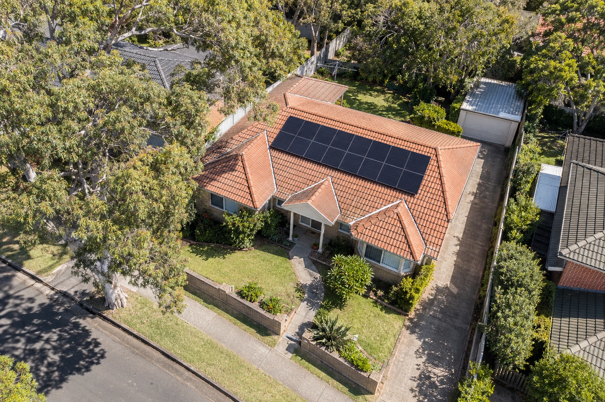
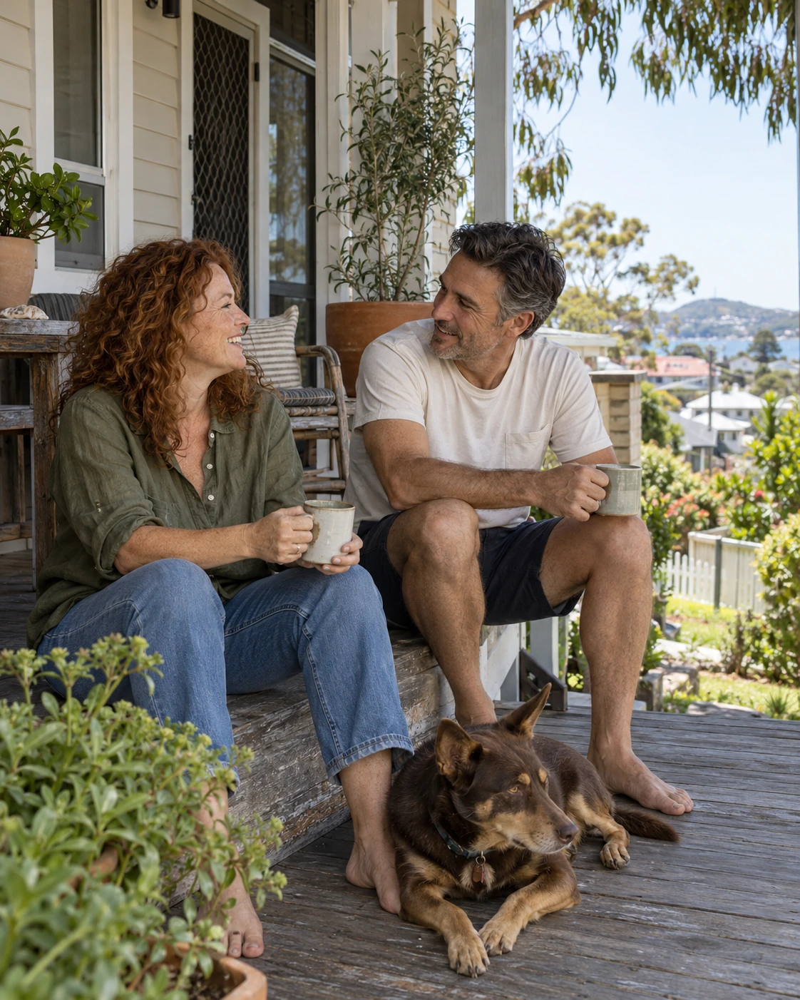
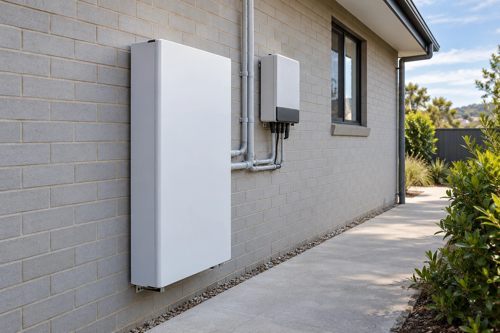
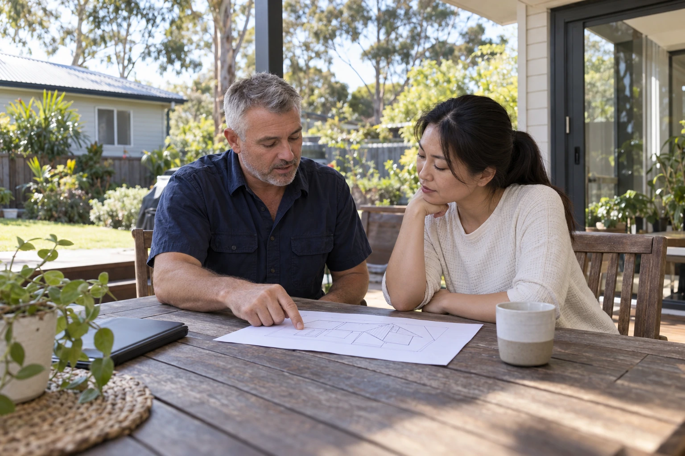
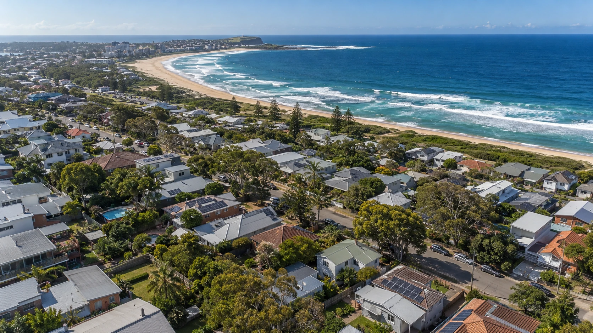

Your roof.
More possible.
A different outlook on home energy.
Solar and battery solutions shaped around your home, your habits and life in Newcastle.

STARTS UP HERE. THE NEWCASTLE HOME ENERGY SERIES
ILLUSTRATIVE PHOTOGRAPHY / 01
Big possibilities.
A very personal
place to start.
It starts with the roof above you.
And the life happening underneath.
No two homes use energy in quite the same way. Your solar plan shouldn't assume they do.
The home office. The afternoon laundry. A growing family, an electric vehicle on the horizon, or simply a bill you'd like to understand better. These details belong in the conversation before a panel goes on your roof.
Roofline brings solar, storage and practical planning into one clear picture. A system that makes sense for the house you have, with room to think about what comes next.
Meet a more considered approachYour home first.
Roof shape, shade, switchboard and how you use energy. The useful detail, before the sales pitch.
A sensible fit.
Solar, a battery or an upgrade. Start with the right question, then build the right scope.
Keep it clear.
Know what's proposed, what's included and what needs checking before you decide.
Good energy.
Your way.
Find a starting point that sounds like you.
We'll take the technical detail from there.

01 / CAPTUREmore of your roof.
Put your roof
to good use.
Turn available roof space into a source of daytime energy. A considered solar design looks at orientation, shading and your household's patterns, rather than choosing a size in isolation.
- Roof and shade assessment
- Panel and inverter options explained
- Thought given to future storage
Save some sun
for later.
A battery can store available solar energy for use at another time. Whether it belongs in your plan depends on your usage, your existing equipment and the space available for installation.
- Compatibility and location review
- Capacity matched to your priorities
- Backup scope explained separately
Make your next
move count.
Already have solar? Start with a review of the system, its condition and how your energy needs have changed. Keeping, replacing or expanding equipment should follow a clear assessment.
- Existing equipment and usage review
- Upgrade options and limitations
- A plan for your changing household
Same home.
A different day.
From the first coffee to the last light.
Explore the simple idea behind solar and storage.
Ease into
the morning.
As daylight increases, solar generation begins to rise. Your home may still draw on the grid or available battery energy while the day gets going.
A useful question: when does your household use the most energy?
Illustrative only. Actual generation, energy flows and storage use depend on weather, usage, system design and configuration. Backup requires a suitable system and an agreed backup arrangement.

MADE FOR THE WAY YOU LIVE.For the home
you come
back to.
The best place to begin isn't a product catalogue. It's a conversation about your everyday.
Maybe you're home through the day. Maybe everyone's out until dinner. Maybe an existing system no longer feels right for the way you live.
Tell us what matters, what you're curious about and what you want to plan for. The aim is a clear next step that respects your home and your decisions.
Before big decisions.
Every roof has
its own story.
A good design starts by reading it.
Here's what belongs in the assessment.
Sun. Shade.
And the hours between.
Orientation and surrounding shade help shape a layout. Trees, neighbouring roofs and changes through the day all deserve a closer look.
Keep a little
day for later.
Solar makes energy while the sun is available. Storage opens another part of the conversation: what could you keep for later, and is that useful for your household?
Make storage part of the conversation
ILLUSTRATIVE BATTERY INSTALLATION.
Start with your usage.Look at when you need energy, not only how much you use.
Check the complete system.Equipment, installation location and controls need to work together.
Talk about backup clearly.Stored energy and whole-home backup are separate conversations.
A good process
feels like this.
A clear path, with room for questions.
From the first conversation to understanding your system.

NOT A GUESS AT YOUR ROOF.
01Let's get the picture.
Your address, your energy bill and your priorities give the conversation somewhere useful to begin. Already have solar? Tell us a little about that too.
YOUR HOME / YOUR GOALS02Get into the detail.
Review the roof, shade, electrical setup and equipment options. Site-specific checks help establish what's feasible and what needs more investigation.
ASSESSMENT / FEASIBILITY03Make an informed call.
A written proposal should explain the equipment, installation scope, assumptions and costs. Take the time to ask questions before agreeing to proceed.
DESIGN / WRITTEN SCOPE04Bring the plan home.
Confirm scheduling and access, complete the agreed installation and receive the handover information. Know how to see your system's performance and where to direct a question.
INSTALLATION / HANDOVERYour next chapter.
What's in it?
Choose the priorities that sound like your home.
We'll carry them into your enquiry.
0 PRIORITIES SELECTED

COASTAL HOMES.A DIFFERENT KIND OF ENERGY.
Newcastle.
Good energy
lives here.
Weatherboards, brick classics and homes with a little history. Every street gives us another reason to look closer.
This is a solar conversation for Newcastle and nearby suburbs. From Merewether to Mayfield, Adamstown to New Lambton, start with your address and we'll confirm whether a site review can be arranged.
Less jargon.
More clarity.
Some useful questions to start with.
Bring the rest to the conversation.
Where should I start with solar?
A recent electricity bill, your address and an idea of how you use energy are useful first steps. A roof and electrical assessment can then help shape a suitable proposal.
How do you decide what size a system should be?
Available roof space is only one input. Usage patterns, shade, orientation, electrical conditions and future plans all matter. The design should explain the assumptions behind a recommended size.
Do I need a battery straight away?
It is a choice to assess around your circumstances. Ask how much energy is available to store, when you'd use it and whether the equipment and installation location are suitable. You can discuss solar-only and storage options separately.
Will a battery power my home in an outage?
That depends on the complete system and its backup configuration. Ask which circuits can be supported, what operating limits apply and what is included in the written scope. Do not assume every battery installation provides whole-home backup.
Can you look at an existing solar system?
Include the approximate age, equipment details and anything you've noticed in your enquiry. A review can establish what information or site checks are needed before discussing replacement, expansion or storage.
Can you estimate savings from this page?
This page does not calculate or promise savings. A useful estimate needs your usage, tariff, location, system design and clear assumptions about future operation.
What should be clear in a quote?
Equipment, the installation scope, exclusions, costs, warranties, responsibilities and any assumptions should be explained in writing. Ask for any potential additional work to be identified before you make a decision.
What happens when I use the enquiry form?
In this website preview, the form prepares an enquiry summary that you can copy or download. It does not send your details or confirm a booking. The business can connect its contact details or an enquiry service before launch.
Hello, sunshine.
Let's talk
about home.
No need to have the technical answers.
A little about your place is enough to start.
A more considered start.